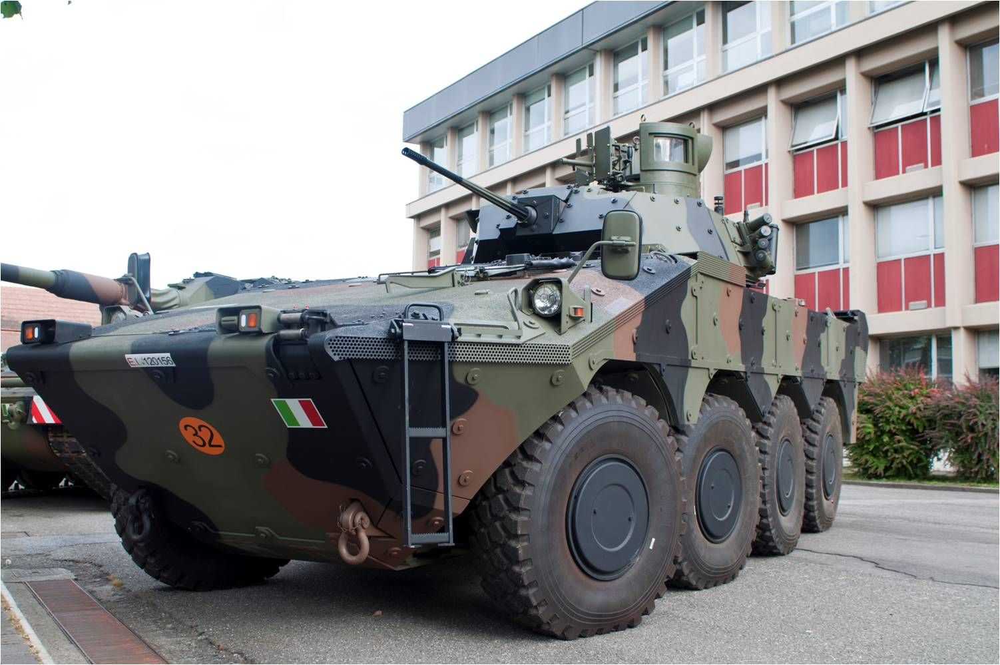

- 42,6 т;
- 3+7 пассажиров;
- мотор MTU MT 881;
- 65 км/ч;
- 1 × 20-мм пушка Mk20 DM5 Rh202
- пулемет 7,62-мм;
- ПТРК «Милан» 2/2т;
- от 30-мм БПС, 20-мм Rh202, кумулятивных БЭ (защита).
- (Разбираем последнюю модификацию - 1A3)
Тема сайта
Содержание
Что такое БМП?
БМП - это Боевая машина пехоты, БМП — класс бронированных боевых машин, основным назначением которых является огневая поддержка и транспортировкаличного состава отделения стрелков (пехоты) к месту выполнения боевой задачи с возможностью десанта вести огневой бой с машины.
А на этом сайте будет находиться
подборка лучших БМП в мире! (не топ)
Marder
Cтарый немецкий БМП - Marder. Создан в 1966-1969 годах немецкой фирмой Rheinmetall AG по заказу ВС ФРГ . Боевая машина пехоты бундесвера, боевая масса - 33,5 тонны. Год принятия на вооружение – 1970. Экипаж – 3 человека + 7 человек десанта.
История БМП Marder
- Годы разработки - с 1951 по 1960
- Годы разработки - с 1969 по 1975
- Годы эксплутации - с 1970 по наст. время
Самая основная информация о БМП "Marder" (снизу подробнее).
Бронирование
- Длина корпуса (мм) - 6880 (1A3)
- Ширина (мм) - 3380 (1A3)
- Высота (мм) - 3090 (по ПТРК)
- Клиренс (мм) - 435 (на всех модификациях)
Бронирование
- лоб корпуса от 30-мм БПС 30×165 мм с D=400 м
- Борт корпуса, мм/град. - от 14,5-мм пуль Б-32
- Корма корпуса, мм/град. от 14,5-мм пуль
Вооружение
- Калибр и марка пушки 1 × 20-мм Mk20 DM5 Rh202
- Тип пушки - Нарезная, автоматическая
- Прицелы тепловизорный, с дневным и ночным каналами
- Пулемёты - 1 × (на 1А2 и 1А3) 7,62-мм MG3
- Другое вооружение - ПТРК Милан-2/2Т
Подвижность
- Тип двигателя - V-образный 6-цилиндровый дизель Daimler-Benz MB833
- Мощность двигателя, (лошадиные силы) - 600 при 2200 об/мин
- Мощность двигателя, (кВт) - 477
- Скорость по шоссе, (км/ч) - 65 км/ч
- Запас хода по шоссе, (км) - 520-600 (на всех модиф.)
- Тип подвески - индивидуальная торсионная
- Преодолеваемый подъём, (град.) - 31-35
- Преодолеваемая стенка,(м) - 0.75
- Преодолеваемый ров, (м) - 2
- Преодолеваемый брод, м 1,5 (без подготовки)

Более современная итальянская Freccia (Фреччия)
История
- Производитель - Iveco — Oto Melara (Италия)
- Годы производства - с 2008
- Годы эксплуатации - с 2009
- Количество выпущенных (шт) - 249 (заказано) А основным оператором является - Италия
Размеры
- Длина корпуса (мм) - 8600
- Ширина (мм) - 2900
- Высота (мм) - 3000
Вооружение
- Калибр и марка пушки - 25-мм Oerlikon KBA
- Тип пушки - нарезная малокалиберная автоматическая пушка
- Пулемёты - 2 × 7,62-мм
- Другое вооружение - ПТРК Spike
Подвижность
- Двигатель - VTCA
- Мощность двигателя, (лошадиных сил). 550
- Скорость по шоссе, (км/ч) - 110 км/ч
- Запас хода по шоссе (км) - 800км
- Колёсная формула - 8 × 8
- Преодолеваемый ров (м) - 2,0
- Преодолеваемый брод (м) - 1,5
Подвижность
Защищённость
Броня обеспечивает защиту от огня 30-мм автоматической пушки в лобовой проекции и круговую защиту от бронебойных 7,62-мм пуль.
Противоминная защита позволяет выжить экипажу при подрыве до 6 кг взрывчатого вещества в тротиловом эквиваленте.
Модификации
- БМП с башней Oto Melara Hitfist, вооруженной 25-мм автоматической пушкой Oerlikon KBA
- самоходный противотанковый комплекс, оснащенный израильскими ракетами «Спайк»
- командно-штабная машина
- самоходный миномёт
- бронированная ремонтно-эвакуационная машина
- бронированная медицинская машина
- Super AV — плавающая, комбинированная модульная броня 4-го поколения разработки IBD Deisenroth
- Engineering, десант от 7 до 12 человек, максимальная масса 29 т.
На вооружении Италии - 155 «Фреччиа», по состоянию на 2016 год
Самая подробная информация по -
Британский Warrior (Уорриор)
- Разработчик - GKN Sankey / GKN Defence
- Производитель - GKN Sankey/BAE Systems
- Годы разработки - 1972—1980
- Годы производства - 1986—1994
- Годы эксплуатации - с 1987
- Количество выпущенных (шт). - 1048
- Основные операторы - Великобритания , Кувейт
Размеры БМП "Warrior"
- Длина корпуса (мм) - 6330
- Ширина (мм) - 3300
- Высота (мм) - 2760
- Клиренс (мм) - 490
- Тип брони - алюминиевая катаная + навесная Лоб защита от 25мм БПС; кругом от 14,5-мм пули Б-32
- Калибр и марка пушки - 30-мм L21A1 Rarden
- Тип пушки - Нарезная, автоматическая
- Длина ствола, калибров - 81
- Боекомплект пушки - 228
- Углы ВН, град. - от 0°...+45°
- Углы ГН, град. - 360°
- Дальность стрельбы,(км) - 4
- Пулемёты - 1 × 7,62-мм L94A1 (Боекомплект - 2 200 патр.)
- Другое вооружение - 2 х 4-х ствольных дымовых гранатомёта
- Тип двигателя - V-образный 8-цилиндровый дизельный жидкостного охлаждения CV8 TCA «Кондор Перкинс»
- Мощность двигателя, л. с. 550 при 2 300 об/мин
- Скорость по шоссе (км/ч) - 75
- Скорость по пересечённой местности, (км/ч) - 50
- Запас хода по шоссе (км) - 500
- Удельная мощность (лошадиных сил,тонн) - 21,7
- Тип подвески - индивидуальная торсионная
- Удельное давление на грунт, кг/см² - 0,7
- Преодолеваемый подъём, град. - 30
- Преодолеваемая стенка, м - 0,75
- Преодолеваемый ров (м) - 2,5
- Преодолеваемый брод, (м) - 1,3
- Классификация - колёсный бронеавтомобиль
- Боевая масса (т) - 33т
- Экипаж (человек) - 3+8 (вариант 8х8, колёсный бронетранспортёр) Разработчиком является - швейцарская фирма MOWAG
- Длина корпуса (м) - 8
- Ширина (м) - 2,99
- Высота (м) - 2,34
- Максимальная скорость (км/ч) - 100 по шоссе, 10 км/ч на плаву
- Дальность хода (км) - 500
- Запас хода – 1000 км по шоссе
- Колёсная формула - 8x8
- 6-цилиндровый V-образный дизельный двигатель жидкостного охлаждения MTU 6V199 TE21 – мощность 577 л.с. (424 кВт)
- 12,7-мм пулемет
- 40-мм гранатомет
- ПУ ПТУР ТОУ
- Противопульное
- Противосколочное
- Классификация - БМП
- Боевая масса (т) - 18,7
- Компоновочная схема - заднемоторная
- Экипаж - 3 человека , десант - 5+2 с доп.местами в передней части
- Производителем является Курганмашзавод (Советский Союз-Россия)
- Годы эксплуатации - с 1987
- Длина корпуса (мм) - 7140 , с пушкой вперёд (в мм) - 7200
- Ширина (мм) -3300
- Высота (мм) - 2300 (по крыше башни)
- Тип брони - алюминиевая катаная разнесённая со стальными экранами. Защита лобовой проекции от 30-мм БТ/2А42 с дистанции 300 м
- Лоб корпуса (верх), мм/град - 18[
- Лоб корпуса (середина), мм/град. - 10(сталь производства ЭШП,ТМО) + 70(воздушный) + 12(сталь) + 60(алюминиевый сплав)
- Лоб корпуса (низ), мм/град. - 10(сталь) + 70(возд.) + 60 (алюминий)[1]
- Борт корпуса (верх), мм/град. 60...43/0(алюминий)
- Корма корпуса (верх), мм/град. -13/0
- Корма корпуса (середина), мм/град. - 13/0
- Корма корпуса (низ), мм/град. - 13
- Днище (мм) - 10
- Крыша корпуса (мм) - 15
- Активная защита : «Арена» и ТШУ-2 «Штора-1» на БМП-3М
- Динамическая защита : «Кактус» на БМП-3М-3
- Калибр и марка пушки - 100-мм 2А70 , 30-мм 2А72
- Тип пушки - 100-мм нарезное полуавтоматическое орудие-пусковая установка , 30-мм нарезная автоматическая пушк
- Боекомплект пушки 40 × 100-мм , 8 × ПТУР , 500 × 30-мм
- Углы ВН, (град). - от −6 до +60
- Углы ГН, (град) - 360
- Дальность стрельбы, (км) - ПТУР: до 5,5 км , пушка 2А70 (100 мм): до 6,5 км , пушка 2А72: до 4,0 км
- Прицелы: комбинированный дневной / пассивный ночной, с лазерным дальномером
- Пулемёты: 3 × 7,62-мм (1 спаренный, 2 курсовых) ПКТ
- Другое вооружение: ПТУР 9М117
- Двигатель - УТД-29М , УТД-32Т
- Мощность двигателя (лс) - 500 (660 на БМП-3М)
- Скорость по шоссе (км/ч) - 70
- Скорость по пересечённой местности (км/ч) - 10 на плаву
- Запас хода по шоссе (км) - 600
- Удельная мощность (лошадиных сил/тонн) - 26,7
- Тип подвески - торсионная
- Удельное давление на грунт (кг/см) - 0,60
- Преодолеваемый подъём (град). - 30
- Преодолеваемая стенка (м) - 0,7
- Преодолеваемый ров (м) - 2,2
- Преодолеваемый брод (м) - плавает
- Боевая масса (т) - 21,0
- Вместимость - 3 человека экипажа + 7 человек десанта
- Производителем БМП ZBL-08 является китайская государственная корпорация Norinco "
- Годы производства - с 2006
- Годы эксплуатации - с 2009
- Количество выпущенных (шт) - 630 (информация на 2017 год)
- Основным оператором является Китай
- Длина корпуса (мм) - ~8000
- Ширина (мм) - ~3000
- Высота (мм) - ~2100
- Клиренс (мм) - 450
- Тип брони: стальная катаная гомогенная (противопульная, противоосколочная)
- Калибр и марка пушки: 30-мм ZPT-99
- Тип пушки: нарезная автоматическая
- Пулемёты - 1 × 7,62-мм ПКТ
- Другое вооружение - ПТРК HJ-73
- Двигатель - BF6M1015C
- Мощность двигателя (лошадиных сил) - 440
- Скорость по шоссе (км/ч) - 110
- Запас хода по шоссе (км) - 800
- Удельная мощность (лошадиные силы, тонны ) - 20,9
- Колёсная формула: 8 × 8
- Тип подвески: индивидуальная торсионная с гидравлическими амортизаторами
- Преодолеваемая стенка (м) - 0,55
- Преодолеваемый ров (м) - 1,8
- Преодолеваемый брод (м) - плавает со скоростью до 8 км/ч
- PTZ-09 — 105-мм противотанковая САУ
- PLL-09 — 122-мм САУ (гаубица)
- PLL-09 — самоходный 120-мм миномёт
- ZTL-11 — 105-мм машина огневой поддержки пехоты
- CS/SA-5 — 30-мм зенитная установка c ПВБС[
- Бронированная ремонтно-эвакуационная машина
- Инженерная машина разграждения
- Боевая разведывательная машина
- Мостоукладчик
- Командно-штабная машина Самая подробная информация по - клику
- Классификация: унифицированная средняя гусеничная платформа
- Боевая масса (т) - 25
- Компоновочная схема: переднемоторная
- Вместимость: 3 человека эпипаж, 7 человек десант
- Разработчик: Тракторные заводы
- Разработчик: Тракторные заводы
- Годы производства: 2015 — настоящее время
- Годы эксплуатации: проходит государственные испытания
- Основным оператором является Россия
- Длина корпуса (мм) - 7200
- Ширина (мм) - 3200(по корпусу) , 4050 (по навесной защите)
- Высота (мм) - 2365 (по крыше корпуса) , 3020 (с боевым модулем) , 3290 (по прицел командира)
- Активная защита: Афганит (опционально)
- Динамическая защита: опционально
- Скорость по шоссе - (км/ч) - 80
- Скорость по воде (км/ч) - 10
- БМП Курганец-25 оснащен безэкипажным боевым радиоуправляемым комплексом «Бумеранг-БМ».
Он состоит из автоматической пушки калибра 30 мм с избирательной подачей снарядов из двух ящиков, пулемётом 7,62 мм, а также противотанковым комплексом «Корнет».
В зависимости от варианта исполнения, для БМП выбирается установка необходимого вооружения. Например, САУ комплектуется противотанковой пушкой калибром 125 мм, гранатомет на 6 гранат. - Боевая масса (т) - 30
- Компоновочная схема: МТО спереди и десантное отделение сзади
- Вместимость: 3 человека экипажа , 7 человек десанта
- Производитель : (M2A3) - United Defense (сейчас — BAE Systems)
- Годы производства : 1980 – 1989
- Годы эксплуатации - с 2000
- Всего выпущено (шт) : 2300 (Армия США) , 600 (Национальная гвардия США)
- Основные операторы - США , Саудовская Аравия
- Длина корпуса (мм) - 6650
- Ширина (мм) - 3600
- Высота (мм) - 2 972
- Клиренс (мм) - 460
- Тип брони : многослойная разнесённая броня»: стальные экраны + алюминиевая броня корпуса
- Лоб корпуса (мм/град) - от 25-мм APDS (БП с отдел-мся поддоном) c 300 м
- Борт корпуса (мм град) - от 14,5-мм Б-32 с 300 м
- Динамическая защита присутствует (M2A2/M2A3)
- Калибр и марка пушки: 25-мм , M242 Бушмастер
- Тип пушки - нарезная, автоматическая
- Длина ствола, калибров: 2 032 мм
- Боекомплект пушки : 75 БОПС-Т + 225 ОФЗТ в боеукладке в башне + 600 в БК корпуса
- Углы ВН (град) - −9°…+57°
- Углы ГН (град) - 360°
- Дальность стрельбы - 2 км
- Прицелы : дневной / пассивный ночной
- Пулемёты 1 × 7,62-мм , М240С (2 200 патронов)
- Так же имеются два ПТРК : Тоу-2
- Двигатель - VTA-903T500
- Скорость по шоссе (км/ч) - 56
- Запас хода по шоссе (км) - 400
- Удельная мощность (лощадиных сил/тонн) - 19,9
- Тип подвески - индивидуальная торсионная с гидравлическими амортизаторами
- Удельное давление на грунт (кг/см²) - 0,66
- Преодолеваемый подъём (град.) - 30°
- Преодолеваемая стенка (м) - 0,76
- Преодолеваемый ров (м) - 2,10
- Преодолеваемый брод (м) - плавает
Бронирование БМП "Warrior"
Подвижность БМП "Warrior"

Mowag Piranha V
Базовая информация
Размеры
Подвижность
Вооружение
Бронирование:

БМП-3
Базовая информация
История БМП-3
Размеры БМП-3
Вооружение БМП-3
Подвижность и двигатель БМП-3
А самая подробная информация по клику
БМП ZBL-08
Базовая информация
История БМП ZBL-08
Размеры БМП ZBL-08
Бронирование БМП ZBL-08
Вооружение БМП ZBL-08
Подвижность БМП ZBL-08
Модификации БМП ZBL-08
Курганец-25
Курганец-25, основная информация
История Курганец-25
Бронирование Курганца-25
Подвижность Курганца-25
M2 Bradley (рассматриваем последнюю модификацию
M2A3)
Базовая информация
История БМП M2 Bradley
Размеры БМП M2 Bradley
Броинрование БМП "M2 Bradley"
Вооружение БМП "M2 Bradley"
Подвижность БМП "M2 Bradley"
Самая подробная информация о БМП M2 Bradley по клику
Шведский Strf-90 (по английскому CV-90)
- Боевая масса (т) - 23т
- Вместимость - 3 человека экипажа, 8 человек десанта
Базовая информация о CV-90
- Производителем являются шведы - BAE Systems AB
- Годы производства - с 1993
- Годы эксплуатации - с 1993
- Количество выпущенных (шт) - ~1170
- Основные операторы - Швеция , Норвегия , Швейцария
История БМП CV-90
- Длина корпуса (мм) - 6550
- Ширина (мм) - 3170
- Высота (мм) - 2710
- Клиренс, мм 450
Размеры БМП CV-90
- Тип брони: стальная катаная, разнесенная + навесные бронемодули пассивной защиты
- Лоб корпуса (мм/град) - НАТО STANAG 4569 Уровень 5+ защита от 30-мм БОПТС
Бронирование БМП CV-90
- Калибр и марка пушки: 40-мм «Бофорс» L70
- Тип пушки: нарезная автоматическая
- Длина ствола, калибров: 70
- Прицелы: дневной и ночной тепловизорный, с лазерным дальномером
- Пулемёты: 1 × 7,62-мм Ksp m/39
Вооружение БМП CV-90
- Тип двигателя: V-образный 8-цилиндровый дизельный жидкостного охлаждения
- Мощность двигателя (лошадиных сил) - 550
- Мощность двигателя (кВт) - 410
- Скорость по шоссе (км/ч) - 70
- Запас хода по шоссе (км) - 320
- Удельная мощность (лошадиных сил/тонн) - 23,8
- Тип подвески: индивидуальная торсионная
- Ширина гусеницы (мм) - 533
- Преодолеваемый подъём (град) - 30
- Преодолеваемая стенка (м) - 0,5
- Преодолеваемый ров (м) - 2,6
- Преодолеваемый брод (м) - 1,4
Подвижность БМП CV-90
Самая подробная информация по клику

K21
- Классификация - БМП
- Боевая масса (т) - 26
- Вместимость: 3 человека экипажа, 9 человек десанта
Базовая информация
- Разработчик - Республика Корея , компании : Doosan DST (генподряд), Samsung (прицельные приспособления)
- Производитель - Doosan
- Годы разработки : 1999 — 2005
- Годы производства : c 2009
- Годы эксплуатации : с 2011
- Основным оператором является Республика Корея (Юж.Корея)
История БМП K21
- Длина корпуса (мм) - 6900
- Ширина (мм) - 3400
- Высота (мм) - 2600
Размеры БМП K21
- Тип брони
алюминиевая из сплава 2519-Т87+комбинированная керамика Al2O3/стеклопластик S2
Защита кругом от пули Б-32 14,5 × 114 мм, осколка 152-мм ОФС
Лоб корпуса от БПС с отделением 30-мм пушки 2A72
Крыша корпуса выдерживает осколки 152-мм ОФС на Д=10 м
ДЗ типов ERA, NERA (только на модификации K21 PIP)
Бронирование БМП K21
- Калибр и марка пушки: 40-мм K40
- Тип пушки : нарезная малокалиберная автоматическая пушка
- Длина ствола, калибров : 70
- Боекомплект пушки : 200
- Углы ВН (град) : -7…+45
- Пулемёты: 1 x 7,62-мм
- Другое вооружение: 2 х ПТУР Spike
Вооружение БМП K21
- Двигатель : Doosan D2840LXE
- Мощность двигателя (лошадиных сил) - 750
- Скорость по шоссе (км/ч) - 70
- Скорость по пересечённой местности (км/ч) - 40
- Запас хода по шоссе (км) - 450
- Удельная мощность, (лошадиных сил/тонн) - 29,6
- Тип подвески: гидропневматическая
- Преодолеваемый брод (м) - плавает со скоростью до 7,8 км/ч
Подвижность БМП K21
Самая подробная информация так же по - КЛИКУ
Немецкая PUMA , наверное лучшая БМП из всех которые присутствуют в подборке
- Боевая масса (т) - 43,0
- Вместимость: 3 человека экипажа + 9 человек десанта
PUMA - базовая информация
- Производитель все тот же, как и у "Marder" - Rheinmetall
- Годы производства - с 2009 по наше время
- Годы эксплуатации: войсковые испытания с 2008; на вооружении с 2015 г.
- Количество выпущенных : 350 ( информация на август 2021 года)
- Основным оператором является Германия
История БМП "Puma"
- Длина корпуса (мм) - 7330
- Ширина (мм) - 3900
- Высота (мм) - 3600
- Клиренс (мм) - 450
Размеры БМП "Puma"
- Тип брони: модульная, композитная AMAP, дополнительная ДЗ
- Лоб корпуса (мм/град) : от оперенных подкалиберных снарядов клб. до 45 мм
- Борт корпуса (мм/град) - мин. от 30-мм оперенных подкалиберных снарядов
- Корма корпуса (мм/град) - от 14,5-мм пуль
- Днище (мм) : защита уровня IVa по STANAG 4569: от 10-кг противотанковой мины и от подрыва мин на основе снарядоформирующего заряда
- Активная защита : типа MUSS
- Динамическая защита: ERA CLARA Dynamit Nobel Defence; заказ 2015 на 200 комплектов ДЗ, масса комплекта - 1 т
Бронирование БМП "Puma"
- Калибр и марка пушки: 30-мм МК 30-2/АВМ
- Тип пушки : нарезная автоматическая
- Боекомплект пушки : 400
- Прицелы : тепловизорный, с дневным и ночным каналами и лазерным дальномером
- Пулемёты : 1 × 5,56-мм HK MG4
- Другое вооружение : ПТУР Spike
Вооружение БМП "Puma"
- Двигатель: HPD
- Мощность двигателя (лошадиных сил) - 1088
- Мощность двигателя (кВт) - 800
- Скорость по шоссе (км/ч) - 70
- Запас хода по шоссе (км) - 600
- Удельная мощность (лошадиных сил/тонн) - 34,1 (24,9)
- Тип подвески: индивидуальная гидропневматическая
- Ширина гусеницы (мм) - 500
Подвижность БМП "Puma"